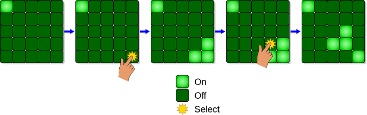

A Lights Out egy elektronikus játék, amit a Tiger Electronics adott ki 1995-ben.
A játék egy 5x5-ös fényekből álló rácsot tartalmaz. Amikor a játék elkezdődik,
egy véletlenszerű vagy előre elmentett fényképet kapcsolnak be.
Bármelyik fény megnyomásával be- és kikapcsolható, valamint a szomszédos fények is be- és kikapcsolódnak.
A játék célja, hogy minél kevesebb gombnyomással lekapcsoljuk az összes fényt.
A Merlin, egy hasonló elektronikus játék, a Parker Brothers által került piacra az 1970-es években.
Egy 3x3-as rácsot használt hasonló szabályokkal.
Egy másik hasonló játékot a Vulcan Electronics gyártott 1983-ban XL-25 néven.
A Tiger Toys is kiadott egy kártyás változatot a Lights Out játékról a Game com handheld játékkonzoljához
1997-ben,
amelyet ingyen szállítottak a konzollal.
Azóta több új puzzle játék jelent meg a Lights Out-hoz hasonlóan, mint például a Lights Out 2000 (5x5-ös
rács több
színnel),
a Lights Out Cube (hat 3x3-as lap hatással a szélekre), és a Lights Out Deluxe (6x6-os rács).
A játék egy 5x5-ös fényekből álló rácsot tartalmaz.
Amikor a játék elkezdődik, egy véletlenszerű vagy előre elmentett fényképet kapcsolnak be.
Bármelyik fény megnyomásával be- és kikapcsolható, valamint a szomszédos fények is be- és
kikapcsolódnak.
A játék célja, hogy minél kevesebb gombnyomással lekapcsoljuk az összes fényt.
Ha egy lámpa világít, akkor páratlan számú kapcsolással lehet kikapcsolni. Ha egy lámpa ki van
kapcsolva, akkor páros
számú kapcsolással lehet kikapcsolt állapotban tartani (ideértve a nulla kapcsolást is).
A játék
stratégiájában számos
következtetést lehet levonni.
Először is, nem számít, milyen sorrendben nyomják meg a lámpákat, mert
az eredmény ugyanaz
lesz.
Másodszor, egy minimális megoldásban minden lámpát csak egyszer kell megnyomni, mert ha egy
lámpát kétszer nyomnak
meg, az ekvivalens az egyszeri megnyomással.
1998-ban Marlow Anderson és Todd Feil lineáris algebrát használtak annak bizonyítására, hogy nem
minden konfiguráció
megoldható, és azt is bebizonyították, hogy bármely megoldható 5x5-ös feladványra pontosan négy
győztes helyzet létezik,
redundáns lépések nélkül.
Az 5x5-ös Lights Out rácson egy 25x1 oszlopvektorral lehet reprezentálni,
ahol a 1 és 0 a
felkapcsolt és lekapcsolt állapotot jelöli. Minden elem az Z2 mező eleme, az egész számok Z
osztályának modulusa 2.
Anderson és Feil azt találták, hogy egy konfiguráció megoldható legyen (a nullvektort kiindulási
konfigurációból
származtatva), az alábbi N1 és N2 vektorokkal ortogonálisnak kell lennie (amelyeket 5x5-ös tömbként
ábrázoltak, de nem
szabad összetéveszteni mátrixokkal).

Ha egyszer találtunk egy megoldást, a minimális lépésszámmal járó megoldást
kiválaszthatjuk azáltal, hogy kizárjuk a
redundáns gombnyomáskészleteket, amelyeknek nincs kumulatív hatásuk.
Ha az 5×5-ös puzzle nem
oldható meg a játék
szabályainak megfelelően, akkor a alsó sor bal oldali két fénye világos marad, amikor az összes
többi fény kikapcsolt.
A megoldások létezése bizonyított számos táblakonfigurációhoz, például hexagonálishoz, míg a n x
n-es táblák
megoldásai n≤200 esetében explicit módon fel vannak sorolva.
Minden N × N esetre létezik megoldás. Az összefüggő gráfokon megoldható, ahol az egyik csúcsra
való
kattintás
megfordítja annak értékét és szomszédjait. Általánosabban, ha az akció mátrix szimmetrikus, akkor
annak diagonális eleme
mindig megoldható.